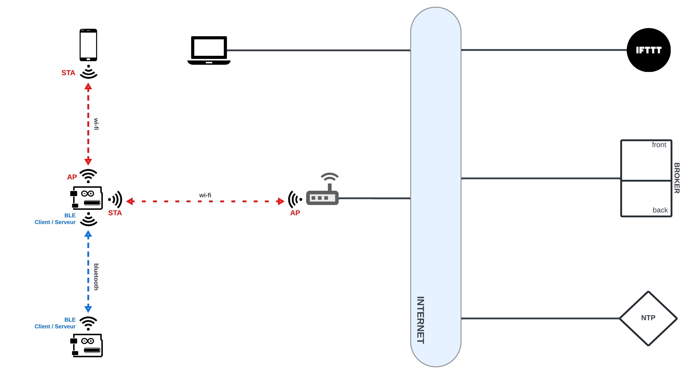
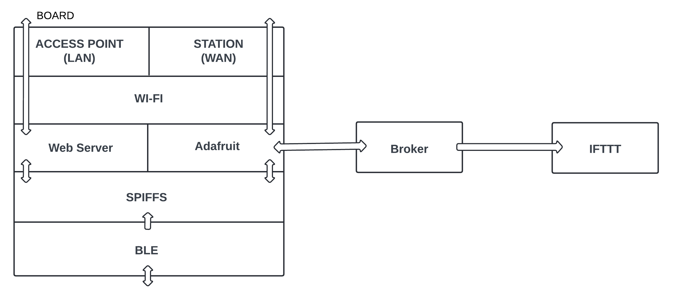
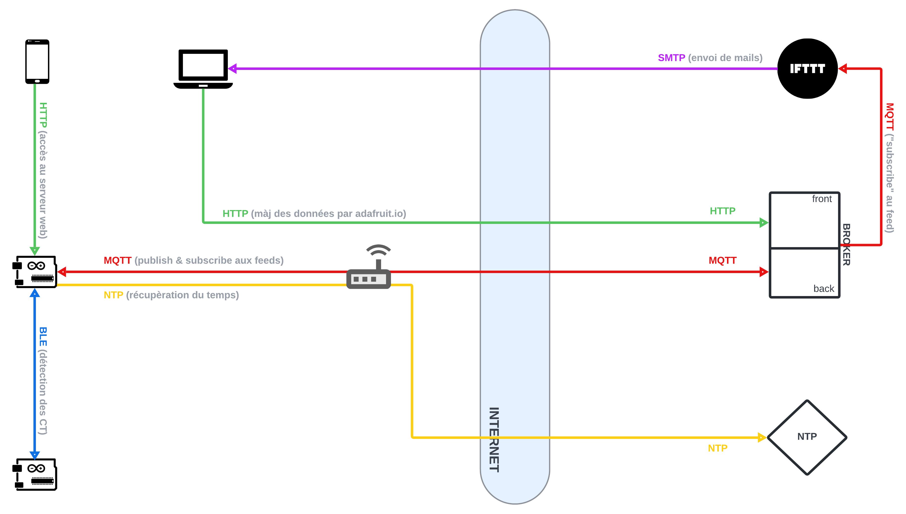
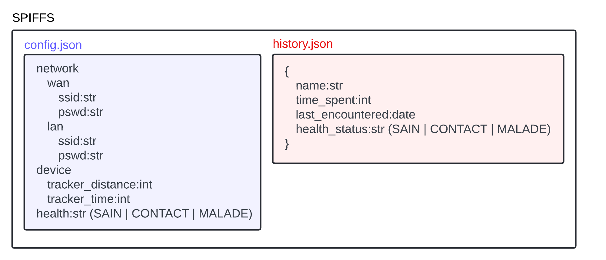

Table des matières
Introduction
Le projet Arduino "YNOV Contact Tracer" vise à fournir une solution permettant de suivre son propre état de santé ainsi que celui des personnes rencontrées, dans un contexte de propagation de maladie type Covid-19.
Après avoir passé un certain temps à proximité d'une autre personne munie d'un Contact Tracer, un utilisateur sera régulièrement mis au courant de l'état de santé de celui-ci s'il change, et recevra une notification si l'une des personnes suivies devient malade. Dans ce cas de figure, l'utilisateur devient automatiquement cas contact.
Fonctionnalités
Utilisateur
- Connexion WiFi : Les utilisateurs peuvent se connecter en WiFi à l'objet et accéder à un portail web captif pour le configurer, en fournissant le SSID et le mot de passe. Cette fonctionnalité permet une configuration facile de l'appareil.
- Paramètres : Via le serveur web, les utilisateurs peuvent ajuster divers paramètres pour personnaliser le fonctionnement de l'objet. Ces paramètres incluent la configuration du wifi, la distance de détection des Contacts Tracers et la fréquence de capture des données de capteur.
- Modification de l'état de santé : Via le serveur web, les utilisateurs peuvent leur propre état de santé qui sera communiquer aux autres utilisateurs qui les suivent.
- Historique des Rencontres : Via le serveur web, les utilisateurs peuvent consulter l'historique de leurs rencontres avec d'autres objets et les contacts à suivre. Cela inclut des informations telles que la date, la durée et l'état de santé.
- Détection des Contacts Tracers : L'objet détecte les Contacts Tracers à proximité en utilisant le Bluetooth. Les informations sur les Contacts Tracers détectés sont stockées en mémoire pour permettre un suivi de leur évolution.
- Notification du changement de l'état de santé : Les utilisateurs sont informés par mail si l'état de santé d'un de leur contact passe à "malade", les rendant "cas contact" par la même occasion.
Administrateur
- Accès à des logs précis via port série : Un administrateur peut accéder à des logs précis via le port série pour détecter d'éventuels problèmes de fonctionnement.
- Mise à jour à distance : un administrateur peut mettre le programme à jour via l'over the air et la connexion réseau.
Architecture
Nous pouvons diviser l'architecture de ce projet en trois couches :
Couche Matérielle & Réseau

L'appareil Covid Tracker :
- est connecté en mode Station à un point d'accès internet (AP) par réseau Wi-Fi
- dispose de son propre sous-réseau en tant que point d'accès (mode Access Point) pour proposer la connexion à son serveur web à d'autres appareils
- détecte les autres Covid Tracker grâce au Bluetooth Low Energy (BLE) en mode client/serveur
Note: les appareils reliés à Internet par une ligne continue noire le sont de n'importe quelle manière, dans la mesure où ils ne font pas partie de la solution.
Couche Logicielle

Ce diagramme présente la communication entre les différents composants logiciels de la carte, et leurs interactions avec l'extérieur :
- Le serveur web et adafruit se servent respectivement du réseau LAN et du réseau WAN pour transmettre leurs données avec l'extérieur, les deux dépendant du Wi-Fi
- Ces deux éléments interagissent avec le système de fichier pour afficher ou mettre à jour les données de la carte
- Le module adafruit gère la connexion avec le broker, qui lui même transmet les données à IFTTT
- Enfin, dans l'autre sens, la détection des contacts via bluetooth va changer le contenu des fichiers, utilisé comme dit précemment par le module Adafruit et le serveur web.
Couche Communication

Note: Par simplicité, toutes les communications de données ont été regroupées sur ce schéma, quelle que soit la couche logicielle du modèle OSI qu'elles utilisent.
Les transferts de données sont les suivants :
- Le serveur web est diffusé sur le protocole HTTP et accédé de cette manière par le navigateur des autres appareils
- La carte récupère l'heure via NTP lorsqu'elle est connectée à Internet
- Si l'utilisateur met son statut à jour, la donnée est envoyée au back-end du broker via MQTT, qui lui même transmet les données à IFTTT via MQTT
- Si IFTT réagit à la mise à jour d'une donnée, il envoie un mail à l'utilisateur via protocole mail (ici SMTP pour la simplicité)
- Un autre appareil peut accéder à la carte via Telnet (non affiché sur le schéma dans la mesure où le remote debug n'est pas complètement implémenté)
- Un autre appareil peut théoriquement modifier les données directement sur le dashboard web Adafruit s'il en a les accès (HTTP).
Structure des fichiers du SPIFFS

Cas d'usage IoT avec Adafruit

Un cas d'usage typique implique l'interaction de deux objets :
- L'objet A détecte un Contact Tracer (objet B) à proximité via bluetooth et garde en mémoire le temps passé avec ce Contact Tracer.
- Si l'objet A passe un certain temps avec le Contact Tracer (objet B), ce dernier devient un contact à suivre et l'objet A se subscribe à son Feed Adafruit.
- A intervalles réguliers, l'objet A récupère les données de santé de l'objet B via son feed Adafruit.
- Si l'objet B signale un changement d'état de santé (devient malade), l'objet A est donc notifié.
- L'utilisateur de l'objet A devient donc un cas contact, et est informé de la situation par email.
Auteurs
Ce projet a été réalisé par une équipe de quatre étudiants de l'école Aix YNOV Campus :